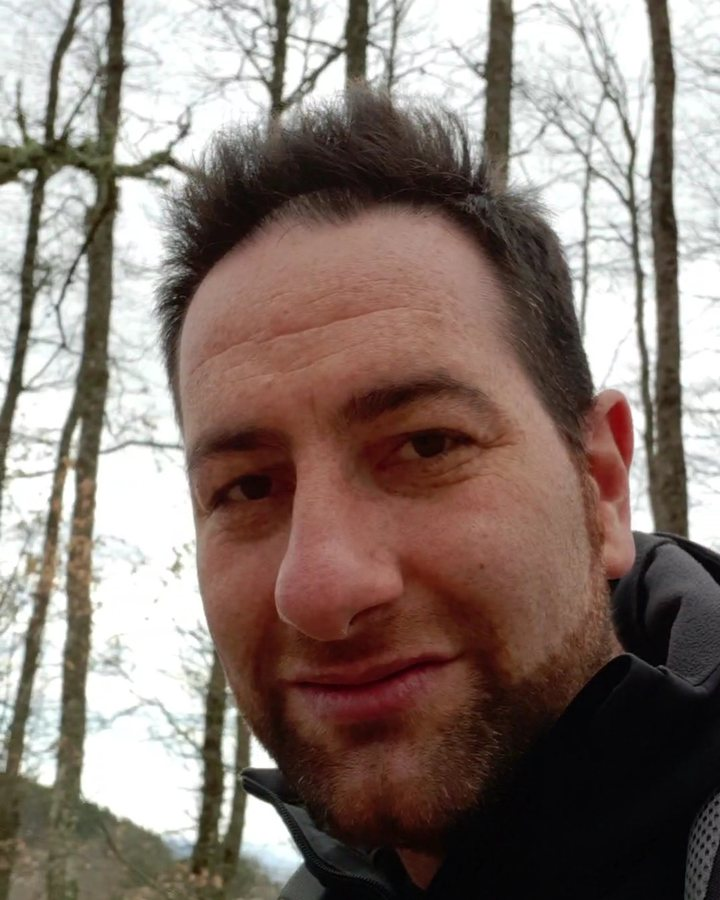

Consulenza agronomica
Supporto tecnico ad aziende agricole e privati: domande e progetti per bandi PSR/CSR, Piani di utilizzazione agronomica (PUA), gestione dei terreni e delle colture, perizie e relazioni tecniche.
Sono Ludovico Frate, Dottore Forestale. Affianco privati, aziende agricole, studi tecnici, investitori e Pubbliche Amministrazioni nella gestione di boschi, terreni e progetti ambientali, dall'analisi dei vincoli alla Valutazione di Incidenza, con un approccio concreto e basato sui dati.

Sono Ludovico Frate, Dottore Forestale, con un Dottorato di Ricerca (PhD) in Ecologia del Paesaggio. Da sempre unisco il lavoro in campo all'uso dei Sistemi Informativi Geografici (GIS) e del telerilevamento: tutto ciò che si può mappare si può anche analizzare, e da lì nascono decisioni più solide.
Mi occupo di progettazione forestale, consulenza agronomica, valutazioni ambientali (VIA, VAS, VIncA) e analisi dei vincoli territoriali, per privati, aziende, studi tecnici, investitori e Pubbliche Amministrazioni.
Collaboro inoltre con il laboratorio EnvixLab dell'Università degli Studi del Molise in progetti di ricerca nazionali e internazionali: un legame che mi permette di portare nella consulenza metodi e dati sempre aggiornati.
Dalla consulenza agronomica alla pianificazione forestale, fino all'analisi territoriale con strumenti GIS: un unico riferimento per le tue esigenze tecniche.
Supporto tecnico ad aziende agricole e privati: domande e progetti per bandi PSR/CSR, Piani di utilizzazione agronomica (PUA), gestione dei terreni e delle colture, perizie e relazioni tecniche.
Progettazione delle utilizzazioni boschive per proprietari pubblici e privati, piani di gestione forestale, rilievi dendrometrici e assistenza nelle pratiche con gli enti competenti.
Perizie di stima del soprassuolo e del fondo boschivo per compravendite, successioni, divisioni ereditarie e contenziosi.
Supporto alla progettazione e alla richiesta di autorizzazione dei tagli boschivi: martellate, piedilista, relazioni tecniche e direzione lavori.
Studi di impatto ambientale (VIA), Valutazione Ambientale Strategica (VAS) di piani e programmi, screening e studi di incidenza (VIncA) per interventi in siti Natura 2000.
Verifica GIS di tutti i vincoli su una particella: paesaggistici, idrogeologici, Natura 2000, aree a rischio e aree idonee. Scopri di più
Cartografie tematiche, analisi spaziali, banche dati territoriali, inquadramenti territoriali e verifica delle aree idonee per progetti e pratiche autorizzative.
Il paesaggio e le sue dinamiche viste dall'alto: elaborazione di immagini satellitari e da drone per monitorare boschi, colture, uso del suolo e cambiamenti nel tempo.
Prima di comprare un terreno, progettare un intervento o investire in un impianto, devi sapere cosa puoi fare su quel fondo. Incrocio con strumenti GIS tutti i vincoli che gravano su una particella e ti consegno un quadro chiaro, con cartografie e una relazione tecnica. Il servizio è disponibile da remoto in tutta Italia: bastano i dati catastali.
Proprietari di boschi e terreni che vogliono valorizzarli, venderli, tagliarli o semplicemente capire cosa possiedono.
Aziende agricole, forestali e imprese boschive che cercano un supporto tecnico affidabile per progetti, pratiche e finanziamenti.
Ingegneri, architetti, geologi e studi di progettazione che hanno bisogno di analisi vincoli, cartografie GIS e relazioni specialistiche forestali e ambientali a supporto dei loro progetti.
Chi valuta l'acquisto di terreni o lo sviluppo di un progetto e vuole una verifica preliminare dei siti: vincoli, fattibilità e criticità prima di investire.
Comuni ed enti che necessitano di studi di incidenza, piani di gestione forestale, cartografie e analisi territoriali.
Sopralluoghi, progettazione forestale e progetti di taglio, stime del bosco, consulenza agronomica e rilievi.
Analisi dei vincoli, GIS e cartografia, telerilevamento e supporto a valutazioni ambientali e studi tecnici di qualsiasi regione.
Sì. Le attività in campo, come sopralluoghi, progetti di taglio, stime e consulenza agronomica, le svolgo in Molise e Abruzzo. Analisi dei vincoli, elaborazioni GIS, cartografie e telerilevamento si fanno invece da remoto: posso lavorare su terreni e progetti in qualsiasi regione d'Italia, partendo dai dati catastali o dai file del progetto.
Il valore dipende dalla specie, dall'età, dalla quantità di legname, dall'accessibilità e dal valore del terreno. Con una stima forestale si determina il valore del soprassuolo e del fondo, utile per compravendite, successioni, divisioni o per valutare un taglio.
Serve per piani, progetti e interventi che possono avere effetti su un sito della Rete Natura 2000 (ZSC o ZPS), anche se si trovano all'esterno del sito. Riguarda ad esempio tagli boschivi, impianti energetici, opere e trasformazioni del suolo. Si parte con uno screening che stabilisce se serve una valutazione più approfondita.
Partendo dai dati catastali della particella incrocio con strumenti GIS le cartografie ufficiali dei vincoli: paesaggistici, idrogeologici, Natura 2000 e aree protette, aree a rischio frana e alluvione, aree boscate e percorse dal fuoco, aree idonee per impianti da fonti rinnovabili. Il risultato è una relazione con le cartografie che ti dice cosa puoi fare sul fondo e quali autorizzazioni servono.
Dipende dal tipo di impianto e dal terreno. Oggi in zona agricola il fotovoltaico a terra tradizionale è ammesso solo in casi limitati, ad esempio nelle aree idonee individuate dalla legge, mentre l'agrivoltaico con moduli sollevati, che permette di continuare a coltivare o pascolare, resta possibile con le autorizzazioni previste. Una verifica agronomica e cartografica del terreno chiarisce quale strada è percorribile.
Prima di firmare conviene capire se il terreno è davvero idoneo, che vincoli ha, quanto vale e quali impegni comporta il contratto, ad esempio la durata, la gestione agricola sotto i pannelli e il ripristino a fine vita dell'impianto. Una valutazione tecnica indipendente ti aiuta a trattare con lo sviluppatore con le informazioni giuste.
Sì. Supporto le Pubbliche Amministrazioni con studi di incidenza, piani di gestione forestale, cartografie GIS e analisi del territorio, ad esempio per mappare colture di pregio, vincoli e aree idonee agli impianti da fonti rinnovabili.
Oltre all'attività professionale individuale, offro ulteriori servizi attraverso Ecoview. Ecoview opera nel settore ambientale, inteso nel suo significato più ampio e integrato.
Raccontami di cosa hai bisogno: un sopralluogo, una perizia, una pratica o un'analisi. Ti rispondo in tempi brevi con una prima valutazione, senza impegno.